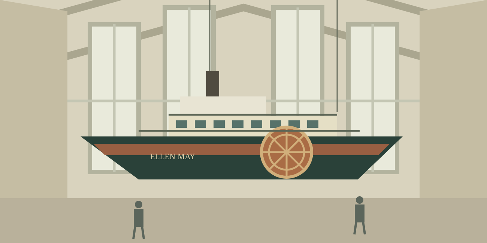

UNTIL 4 JANUARY 2027
Made on
the River
Two hundred years of shipbuilding, rope-making and brewing along a single mile of water. Over three hundred objects in the exhibition concept.
Book free ticket ↗WORK / WATER / THE CITY

PLAN YOUR DAY10:00–17:00
Last entry 16:15
NOW SHOWING / SAMPLE PROGRAMMEThree exhibitions.
One free.
GETTING HEREFive minutes from
Riverside station.
UNTIL 4 JANUARY 2027
Two hundred years of shipbuilding, rope-making and brewing along a single mile of water. Over three hundred objects in the exhibition concept.
Book free ticket ↗2 OCTOBER 2026 – 14 MARCH 2027
Eighty chairs, from a Victorian pew to a 3D-printed stool, and what each says about how people lived.
Buy tickets · £12 ↗OPENS 20 NOVEMBER 2026
Photographs of the city between midnight and six, taken by the people who work those hours.
Buy tickets · £9 ↗Archive programme examples.
These dates are not live listings.
| Date / time | Event | Type | Price | Details |
|---|---|---|---|---|
| Sat 19 Sep 11:00 | Family trail: Find the Figurehead | Families | Free | |
| Wed 23 Sep 18:30 | Late: Chairs After Dark | Late | £15 | |
| Sat 26 Sep 14:00 | Curator’s tour of Made on the River | Tour | Free | |
| Thu 1 Oct 19:00 | Talk: The Brewers of Quay Street | Talk | £8 | |
| Sun 4 Oct 10:30 | Relaxed opening for sensory needs | Access | Free |
Explore the stories behind four illustrated catalogue objects.
| Tuesday–Sunday | 10:00–17:00 |
|---|---|
| Thursday late | Until 21:00 |
| Monday | Closed except bank holidays |
Quay Street, RS1 4BN
Fictional location and station.
The brief describes step-free access, wheelchairs and ear defenders at the desk. These facilities are illustrative; confirm access directly with an actual museum.
A ground-floor café concept, open during sample museum hours. Menu and service are not available here.
General entry and Made on the River: free.
Chairs: £12. Night Shift: £9.
Illustrative prices only.
Ticket links lead here because no real ticket provider is supplied. This fictional museum accepts no bookings, registrations or payments. Check an actual museum’s official website before travelling.
MEMBERSHIP / CONCEPT
Free entry to paid exhibitions
Members’ previews
10% off in the shop & café
Example benefits only. No membership purchase or registration is available.